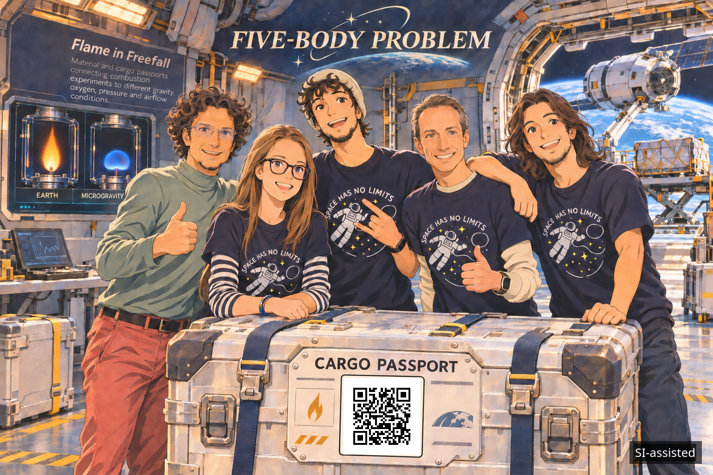
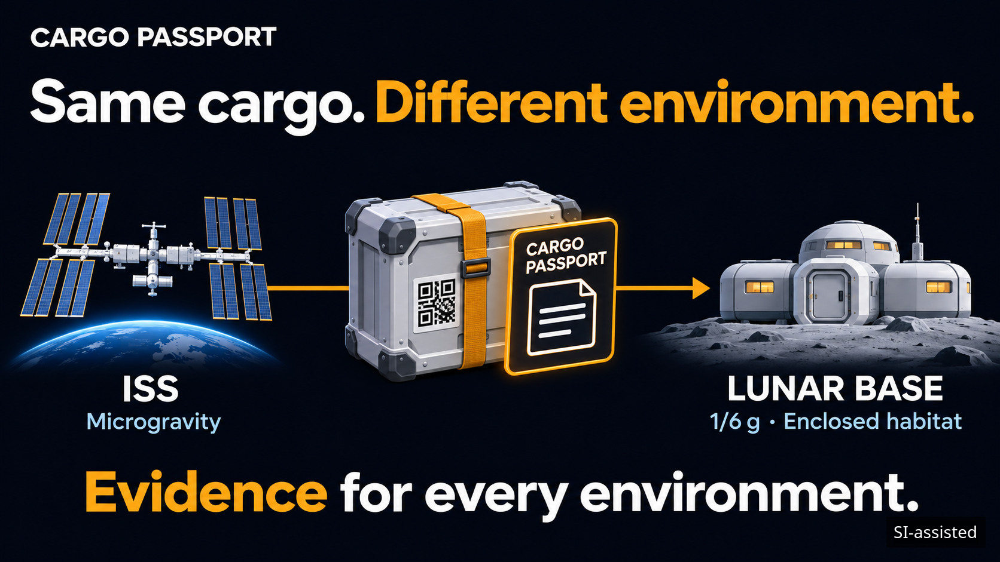

NASA space experiments, drop-tower tests & MAPTIS material data.
Compares test conditions with the cargo's real journey. Explains findings with sources. Flags what is untested.
How to ship, where to store, what to test next.